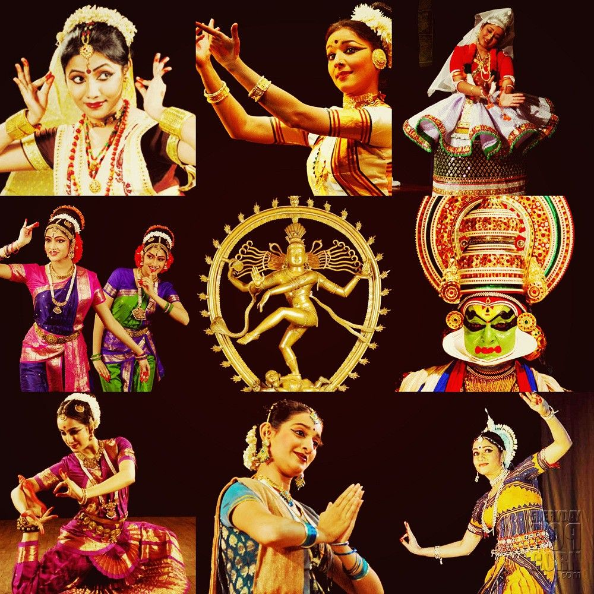

Classical Dance

Classical Dance Forms
Indian classical dance blends drama, music, and rhythm, and each form tells stories from epics like the Mahabharata and Ramayana. Key forms include:
Bharatanatyam (Tamil Nadu):
Known for its precise movements, expressive facial gestures, and grounded posture.
Kathak (North India):
A storytelling dance with fast spins and intricate footwork, often performed to Hindustani music.
Kathakali (Kerala):
A theatrical dance with elaborate makeup, colorful costumes, and intense facial expressions, used to narrate epic tales.
Odissi (Odisha):
Known for its fluid torso movements and tribhangi (three-bend) posture.
Kuchipudi (Andhra Pradesh):
Combines dance with spoken dialogue and is known for dramatic expression.
Each classical form has its own costume style, instruments, and symbolic gestures (mudras).
Folk Dances
Indian folk dances are celebratory, tied to festivals, harvests, and local stories. Popular examples include:
Garba and Dandiya (Gujarat):
Group dances performed with sticks, often during the festival of Navratri.
Ghoomar (Rajasthan):
A vibrant dance where women spin gracefully in colorful skirts.
Lavani (Maharashtra):
A fast-paced, rhythmic dance form known for expressive moves, often performed to upbeat folk songs.
Bihu (Assam):
A joyous, energetic dance celebrating the Assamese New Year and harvest season.
Fusion and Bollywood Influence:
Modern Indian music and dance incorporate Western genres, particularly through Bollywood. This vibrant fusion creates a unique, high-energy style that blends traditional and contemporary elements. Bollywood dance and music have gained international popularity, making Indian culture widely recognized around the world.
Indian music and dance traditions highlight the region’s cultural richness and spiritual essence, reflecting deep connections to history, community, and spirituality.